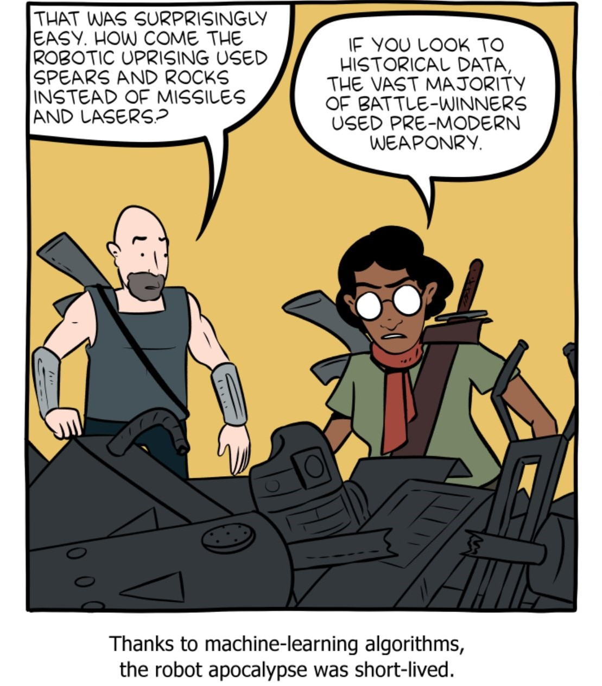
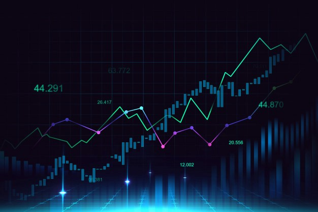
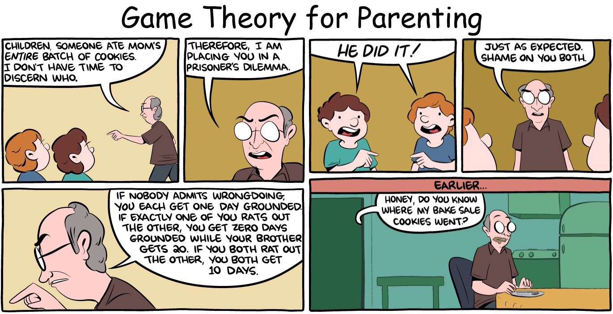
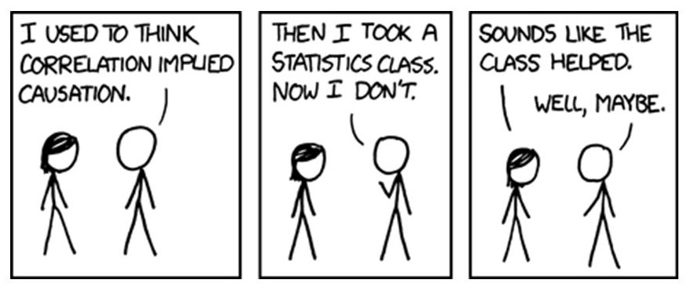

Machine Learning for Economics
An elective course offered by Economics Department for juniors/seniors
For more details, see my syllabus.

The goal of this course is to provide an introduction to methods that allow to deal with large scale
data sets. My course is based on R and focuses heavily on causality. And, we focus on statistical
learning techniques and high-dimensional statistics, and show how they can be applied in economics
and
business administration. Most of my student are Econ, CS, and Math majors.
Course Description: One of the defining features of
the world around us today is the ever-increasing amounts of data that
describe our daily lives. This "big data" phenomenon, as it became known, has led to developing of
new methods,
called "machine learning", that allow high-dimensional statistical analysis in ways that were either
impossible or
infeasible for classical statistical methods, such as regression analysis.
The goal of this course is to provide students with an introduction to modern data-driven learning
in a
framework that makes it applicable to causal economic analysis. While we will cover the necessary
theoretical
foundations, the emphasis will be placed on application and learning how and when to use these
methods, as
well as when and how these methods can fail.
Forecasting Techniques
A graduate elective course offered by Finance Department for master students
For more details, see my syllabus.

This course aims to provide a broad-based survey of business forecasting methods. My course is based
on R and focuses on practical how-to forecasting techniques and dozens of real-world data sets while
teaching intuition on theory and math.
Course Description: The theory and practice of
applied time series analysis will be explored. First the different segments (trend, seasonality,
cyclical, and irregular) of a time series will be analyzed by examining the Autocorrelation
functions (ACF) and Partial Autocorrelation functions (PACF). The specifics model the various types
of time series include linear regression, panel regression, seasonal decomposition, exponential
smoothing, and ARIMA modeling as well as combining models.
In short, this course will equip you with tools
necessary to construct forecasts to inform business
decisions. As such, the focus of the course will not be only on tools, but also on how they are used
in business.
Microeconomics Theory
An intermediate course offered by Economics Department for sophomores
For more details, see my syllabus.

Microeconomics is the foundation of all economic analysis. I teach the fundamental theories of
microeconomics and illustrate the widespread implications of these theories when we examine
real-world situations. This course aims to have every student “thinking like an economist” and
feeling comfortable enough with microeconomics to apply it in all walks of their lives.
Course Description: This course builds on Principles
of Economics and covers topics such as consumer theory and producer theory in depth. The aim of the
course is to provide you with a solid background of the tools of microeconomic analysis.
Econometrics Labs
A lab course for intermediate Econometrics Methods course offered by Economics Department for
sophomores
For more details, see my syllabus.

My students work on labs in small groups. The course introduces
coding concepts and offers hands-on experience with econometric estimators they learn at their
theory course.
I served as Head TA for this course and supervised a team of 3 doctorate students that led sections
for 200+ students.
Course Description: OThis is the lab for the
combined Econometrics Methods courses (EC2228). We will focus on the practical use of Stata in
econometric applications and the interpretation and presentation of econometric results. Lab
materials will be available on the course Canvas page (in Modules). Stata is available via the BC
Applications Server.
Teaching Activities
I have enjoyed many different teaching levels as an instructor, teaching assistant,
tutor, and grader during my formal education. You can find a complete list of my teaching activities
below.
Instructor, Boston College
-
Machine Learning for Economics (Spring 2021)
-
Forecasting Techniques - Master's
level (Spring 2021)
-
Microeconomic Theory (Fall 2021)
-
Econometrics Lab, Head Instructor (Fall 2019, Fall 2020,
Spring 2021) [Evaluation,
Evaluation,
Evaluation]
Teaching Assistant, Harvard University
-
Microeconomic Theory - Master's level
(Fall 2021)
-
Managerial Economics - Master's level
(Summer 2020, Summer 2021) [Evaluation,
Evaluation]
Teaching Assistant, Boston College
-
Principles of Economics (Spring 2020)
-
Applied Macroeconomic Theory - Master's
level (Fall 2019)
-
Principles of Macroeconomics (Spring 2019)
-
Econometric Methods (Fall 2018)
-
Econometric Methods - Ph.D.
level (Spring 2018)
-
Statistics - Ph.D. level (Fall
2017)
-
Game Theory (Spring 2017)
-
International Economic Relations (Fall 2016, Spring
2017)
-
Microeconomics Theory (Fall 2016)
Graduate Tutor, Boston College, Woods College
Teaching Assistant, Bogazici University
-
Macroeconomics (Spring 2016)
-
Mathematical Methods for Economics -
Master's level (Fall 2015)
-
Microeconomics (Summer 2015)
-
Computing for Economics and Management (Spring
2015)
-
Mathematics for Economist (Fall 2014)
Teaching Award
Teacher Training
Apprenticeship
in College Teaching, Center for Teaching Excellence, Boston College